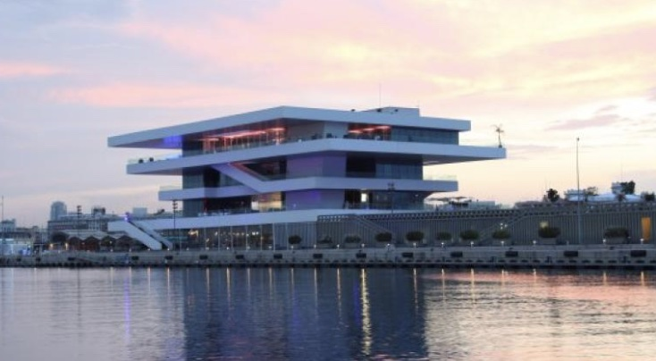
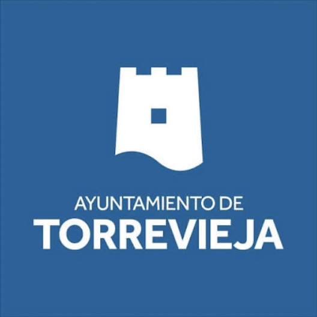

Pasamos de cuatro a tres jornadas presenciales, de martes a jueves
Añadimos una sesión telemática de revisión de los proyectos de evaluación
Trasladamos los contenidos compartidos y los recursos adicionales al Forum Gestiona Avanza
Incorporamos la tutorización personalizada
Gestiona for Developers
Pasamos de cuatro jornadas presenciales en una sesión a seis jornadas presenciales en dos sesiones
Trasladamos el contenido adicional de la API al Forum
Login único en todas las plataformas y recursos (n8n, Slack, Forum y Academy)
10
05 Eventos Gestiona Avanza
I Datathon Gestiona Avanza
Dónde
Valencia
Cuándo
Del 7 al 9 de abril
Quién
Usuarios certificados en Analiza y Admin.Avanzada
Descripción
Construcción de gemelos digitales, depuración de fuentes públicas de datos y su aplicación en la tramitación administrativa

11
05 Eventos Gestiona Avanza
II Hackathon Gestiona Avanza
Dónde
Torrevieja
Cuándo
Del 24 al 26 de febrero
Quién
Usuarios certificados en Developers, Admin.Avanzada y Analiza
Descripción
Diseño, desarrollo y despliegue de un proyecto 360º que se pueda poner en producción

12
06 Gestiona Avanza Bytes
Nuevo proyecto «Gestiona Avanza Bytes»
Canal de microformación audiovisual en formato vertical: píldoras breves sobre los módulos y funcionalidades de Gestiona que complementan la formación estructurada.
Academy – Formación
Cursos, itinerarios y sesiones con desarrollo y profundidad
Forum – Conexión
Relación, participación e intercambio de experiencias
Bytes – Acompañamiento
Descubre funcionalidades y conoce las novedades
13
06 Gestiona Avanza Bytes
Contenido AAA
Cada Byte sigue la misma estructura: una única idea, de 15 a 30 segundos, en vertical 9:16.
1
Aprende
0–4 s. Presenta lo que se va a aprender
2
Aplica
4–18 s. La interfaz real de Gestiona es la protagonista
3
Avanza
2–4 s. Muestra el resultado conseguido
14
06 Gestiona Avanza Bytes
Tipología de contenido
Cada tipología responde a una pregunta del usuario y busca un resultado concreto.